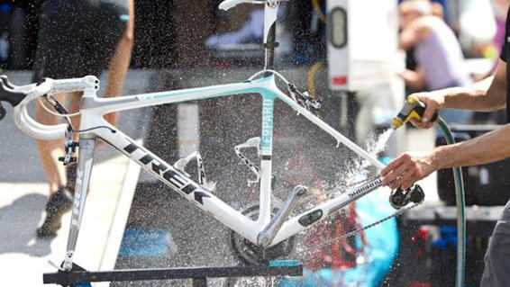

Service
5 Essential Bike Shop Repairs
*Labor based on an hourly rate [$60/hour].
- Deep Drivetrain Clean/Tune
- Cost: $60 to $100
- Suspension Overhaul
- Cost: $75 to $175 for fork or rear shock (each – wide range depends on level of rebuild and whether internal parts are included)
- Bottom Bracket Overhaul
- Cost: $30 to $60
- True Wheels
- Cost: $20 to $30/wheel (basic true job)
- Bleed Disc Brakes
- Cost: $20 to $40 per brake
What: Your local shop will remove all the drivetrain parts: chain, cassette, crankset, and derailleurs, and clean them in a dedicated parts washer or ultrasonic cleaner before reinstalling them and tuning the shifting.
Why: Regularly cleaning and lubing your chain goes a long way toward keeping your drivetrain running smoothly, but once a season you need a deep clean to get all the grime off. Your mechanic will also inspect the drivetrain for signs of wear that might require replacement parts, like new chainrings.
What: A mechanic will disassemble the suspension fork and rear shock, clean the internals, and reinstall them with new, clean oil to keep things running smoothly. They’ll also check for wear on bushings and seals and recommend replacements if necessary. Ask them to inspect your rear suspension pivots as well to check for worn bushings or bearings. Not all shops do suspension maintenance, but some shops that specialize in it and will work with out-of-town customers. Fox Racing Shox has a premium in-house service as well. If you have to send off the suspension, count on a longer turnaround time.
Why: This is the quintessential pro repair. Suspension maintenance is detailed, messy, and requires special tools few home mechanics have, but good working fork and shock are vital to our enjoyment of mountain biking. Many of us neglect our suspension until something fails, which sometimes requires total replacement. Suspension rebuilds are not cheap, but with new forks starting around $800 and rear shocks at $400 or more, a little preventive maintenance can go a long way toward extending their life. Do you really need to do this every year? Maybe, but maybe not. RockShox recommends an overhaul interval of 100 hours of riding. Fox sets the bar at 125 hours. Given that riding conditions vary widely, you may find you can go longer than that.
What: Your shop will disassemble the bottom bracket, clean and regrease (or replace, for extra) bearings, clean the shell and cups or press-fit insert, and reinstall the entire setup. They’ll also inspect for bearing wear and creaks.
Why: Many of the maddening creaks, ticks, and squeaks we hear on our bikes emanate from the BB. That’s increasingly true with the proliferation of integrated systems, which often require press-fit bearing inserts that can loosen over time. As well, the way these systems are designed often shortens bearing life. An annual overhaul ensures that the system is clean and correctly installed, with bearings that spin freely and smoothly.
What: Each wheel gets put in the truing stand and spoke tension is tuned for true (side-to-side wobbles), round (vertical hops), and dish (alignment of the rim on the hub so it’s in the center of the bike frame). Stressed spokes or spoke nipples get replaced, which may cost extra.
Why: Wheels get neglected maybe even more than suspension. They’re a complex piece of machinery and, over a season of riding, spoke tension changes and the wheel may go out of true or out of round. That makes an unstable wheel; it can handle strangely and is more prone to damage. A well-maintained set of “everyday use” wheels should last for five to ten years.
What: Front and rear hydraulic brakes are flushed with fresh brake fluid. Pistons are usually cleaned and pads inspected for wear and replaced if necessary (extra cost for new pads).
Why: Hydraulic systems are sealed but, over time, some impurities can get in (typically at the piston seals). Also, air bubbles develop that can cause performance issues like brake fade on long descents. A bleed replaces all the fluid in the system, flushing out air bubbles and impurities so your brakes work well, consistently.